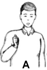
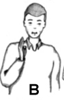
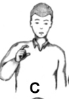

| Letra | Imagen | Descripcion |
| A |  | Utilizo una mano. Cerrar la mano en forma de punio, el dedo pulgar queda arriba del dedo indice. |
| B |  | Utilizo una mano. Extender la mano, verticalmente, dedos juntos y el pulgar apoyado en la palma. La direccion de la mano es perpendicular a la persona. |
| C |  | Utilizo una mano. Con el dedo indice y el pulcar se curvan formando un circulo abierto. El resto de los dedos en forma de punio. |